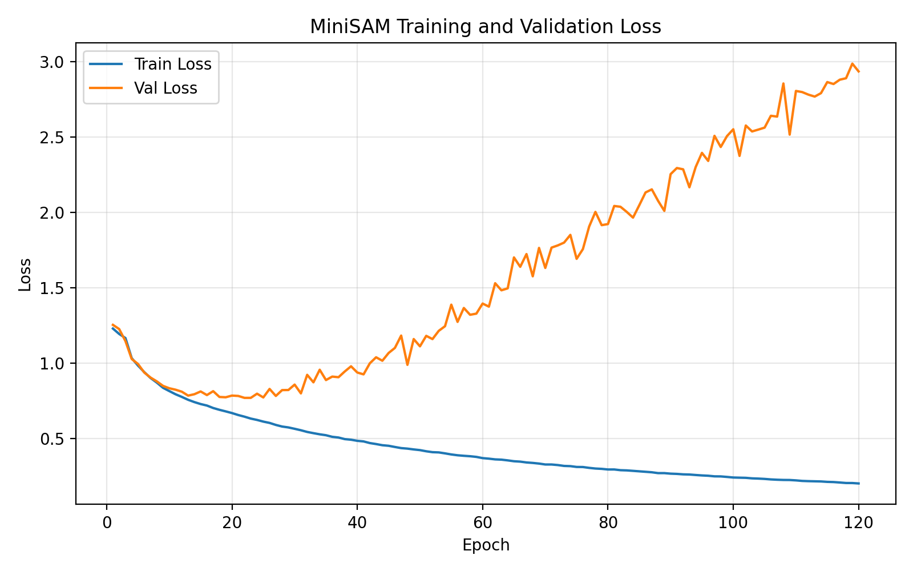
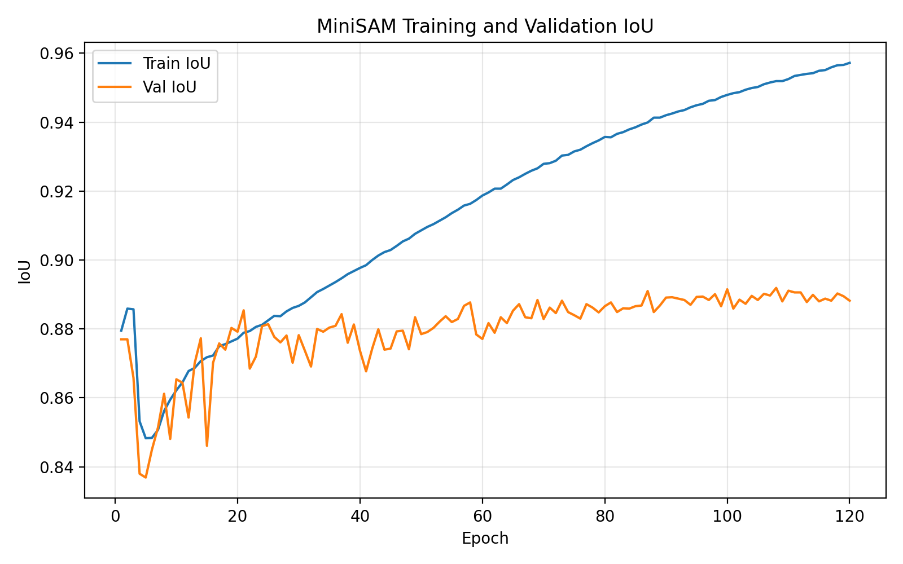
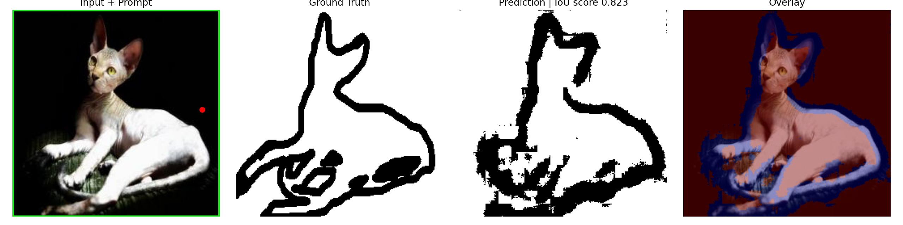
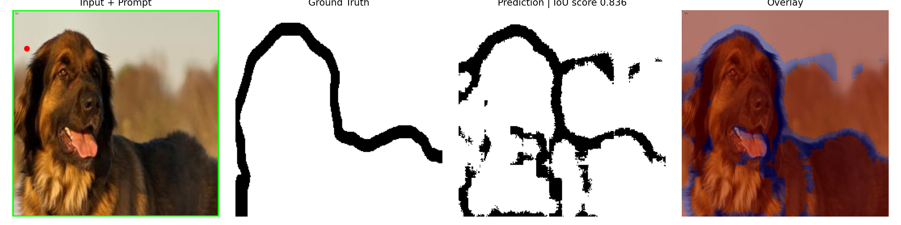

MiniSAM Results
MiniSAM was trained from scratch on the Oxford-IIIT Pet segmentation dataset. The model uses box and positive point prompts generated from ground-truth masks.
Final Training Summary
- Final train IoU: approximately 0.957
- Final validation IoU: approximately 0.888–0.890
- Training epochs: 120
- Input image size: 256 × 256
- Prompt types: box prompt + positive point prompt
Training Curves


Prediction Examples

